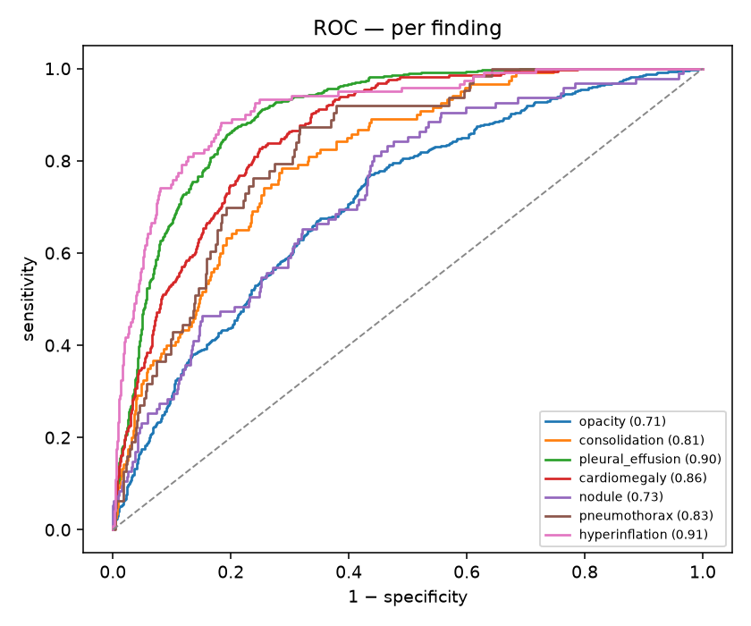
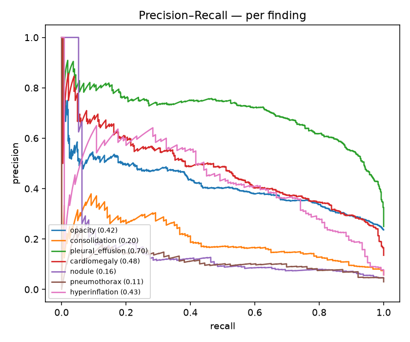
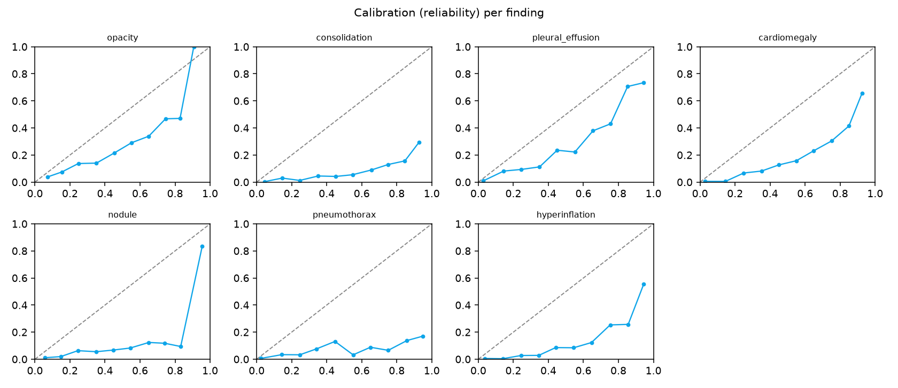
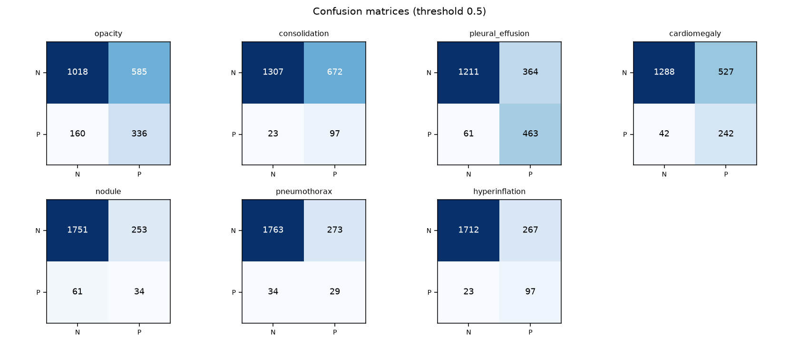
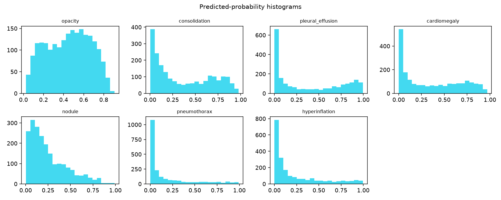

Model: E:\AURA\aura-main\aura\artifacts\retrain_v2\best_model.pt · epoch 7 · evaluated on 2099 held-out validation images
(per-study/de-smeared labels).
Headline: macro AUROC 0.8210 (95% CI 0.8083–0.8332) vs 2-epoch baseline 0.6665 IMPROVED
| metric | baseline | retrain_v2 | Δ |
|---|---|---|---|
| macro AUROC (discrimination) | 0.6665 | 0.8210 | +0.1545 |
| macro AUPRC | 0.2140 | 0.3576 | +0.1436 |
| macro F1 @0.5 | 0.2549 | 0.3679 | +0.1130 |
| macro ECE — raw (lower=better) | 0.3370 | 0.1999 | -0.1371 |
| macro ECE — after Platt calib | 0.0363 | 0.0337 | -0.0026 |
| macro Brier (lower=better) | 0.2445 | 0.1484 | -0.0961 |
| finding | AUROC | AUPRC | sens | spec | n+ |
|---|---|---|---|---|---|
| opacity | 0.712 | 0.416 | 0.677 | 0.635 | 496 |
| consolidation | 0.807 | 0.200 | 0.808 | 0.660 | 120 |
| pleural_effusion | 0.900 | 0.703 | 0.884 | 0.769 | 524 |
| cardiomegaly | 0.862 | 0.476 | 0.852 | 0.710 | 284 |
| nodule | 0.729 | 0.165 | 0.358 | 0.874 | 95 |
| pneumothorax | 0.825 | 0.114 | 0.460 | 0.866 | 63 |
| hyperinflation | 0.912 | 0.430 | 0.808 | 0.865 | 120 |





Generated by eval_new_model.py · baseline numbers from this session's honest per-study eval.